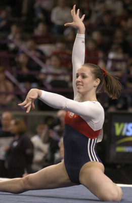

Chellsie Memmel (USA)
2003 World UB Champion
2005 AA World Champion
2008 Olympic Team Silver Medalist

Medal Total
Olympic Games: 1
Silver
World Championships: 3 Gold, 3 Silver
World Cup: 1 Gold
Chellsie was born on June 23, 1988. She was coached by her parents at the family's gym, M&M Gymnastics, in New Berlin, Wisconsin. Chellsie was a stand-out junior gymnast and continued to impress in the senior ranks. She was a member of two world championships teams (and became world AA champion in 2005) as well as the 2008 Olympic team (where she won silver with her team). She dislocated her shoulder at the 2011 US Championships during her UB routine and subsequently had two surgeries (2011 and 2012); she announced her retirement in late 2012.
Memmel married in August 2013. After giving birth to two children, she decided to get back into shape by "playing around" in the gym and began to train seriously in early 2020. She announced her comeback to elite competition in the summer of 2020, and competed at both the 2021 US Classic and US Championships (where on Day 1 she scored a very respectable 14.75 for a double-twisting layout Yurchenko vault).
Competition
Results
1999
American Challenge: 1st AA
National Gymnastics Festival: 1st AA (children's division)
2000
Jr. American Classic: 7th AA
Jr. US Championships: 17th AA, 6th FX
Puerto Rico Cup: 1st AA
USA-FRA Dual Meet: 1st Team, 2nd AA
2002
Jr. American Classic: 10th AA
Jr. US Championships: 3rd AA
Jr. US Classic: 4th AA
USA-MEX Dual Meet: 1st Team, 3rd AA
2003
American Classic: 3rd AA, 1st UB, 1st B
Pacific Challenge: 1st Team,
1st UB
Pan American Games: 1st Team, 1st AA, 1st UB, 3rd B
Podium Meet (Jr.): 3rd AA
US Championships: 10th AA
World Championships:1st Team, 8th AA, 1st UB, 6th B
2004
American Cup: 3rd AA
Pan American Individual Event Championships: 1st UB, 1st B
World Cup: 1st UB
2005
American Cup: 1st UB, 3rd B
GBR-USA Dual Meet: 1st Team, 1st UB
Pan American Games: 1st Team, 1st AA, 1st UB, 1st B
SUi-USA Dual Meet: 1st Team, 1st V, 2nd UB, 3rd B
US Championships: 2nd AA, 2nd UB, 2nd B, 3rd FX
US Classic: 4th AA
World Championships: 1st AA, 2nd UB, 2nd B
2006
Pacific Alliance Championships: 1st Team, 2nd AA, 1st , 2nd FX
US Championships: 4th AA, 3rd FX, 4th B
World Championships: 2nd Team
2007
Good Luck Beijing Intl. Tournament: 5th AA, 3rd B, 3rd FX
Toyota Cup: 1st FX, 2nd B
US Classic: 16th AA
2008
Friendship International Exchange Competition: 3rd AA
Olympic Games: 2nd Team
US Championships: 3rd AA, 2nd UB, 4th B, 4th FX
US Olympic Trials: 3rd AA, 2nd UB, 2nd B, 2nd FX
2009
US Championships: 8th B
2011
US Championships: 8th AA
US Classic: 2nd AA
2012
US Classic: 21st AA
2021
US Championships: 25th AA
US Classic: 37th AA
This page was created on June 21, 2010 and was last updated on July 18, 2021.
© Gymn Forum